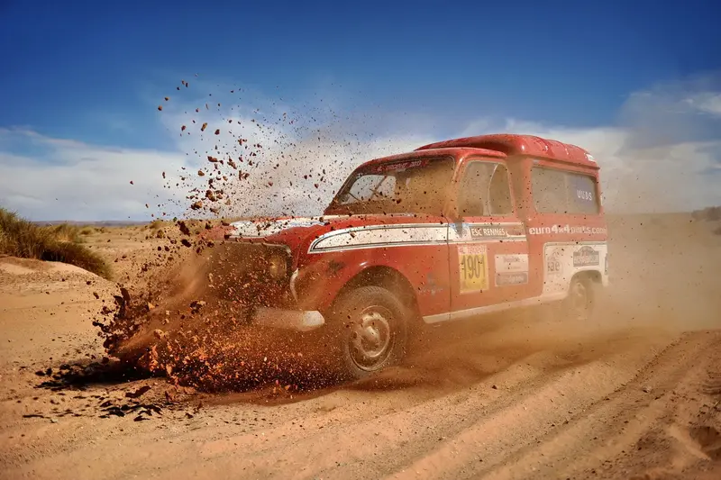

4L Trophy
Le Raid 4L Trophy est un raid automobile solidaire destiné aux jeunes de moins de 28 ans et couru exclusivement en Renault 4. Créé par Jean-Jacques Rey en 1997, il est organisé par l'entreprise Desertours en partenariat avec l'École supérieure de commerce de Rennes, qui apporte l'encadrement bénévole. Ce raid, composé de plusieurs milliers de voitures, amène au Maroc des jouets et des fournitures scolaires, ainsi que quelques tonnes de nourriture et quelques milliers d'euros de dons.

Le 4L Trophy permet d'apporter des fournitures scolaires aux enfants du Maroc, en collaboration avec l'association « Enfants du désert ». Chaque équipage doit emporter soit deux sacs à dos avec des fournitures scolaires et deux sacs de sport avec des affaires sportives, soit un sac à dos et un de sport remplis et un chèque de minimum 20 € au nom de l'association « Enfants du désert ». Avant 2006, chaque équipage devait emporter 50 kg de matériel scolaire ou un chèque au nom de l'association. L'ensemble de la collecte est ensuite distribué sur place aux enfants marocains. Norauto a également pu offrir 90 vélos pour la mobilité des enfants pour aller à l’école, des vêtements de sports ont aussi été offerts.
Les dons faits à l'association « Enfants du désert » permettent la construction d'écoles au Maroc. Cette association effectue la distribution auprès d'associations locales, « pour ne pas faire de néo-colonialisme »3. Entre 2012 et 2019, 26 classes ont été ouvertes grâce au raid.
